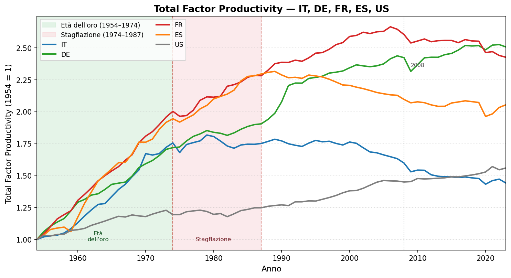
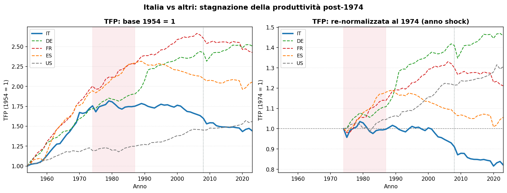
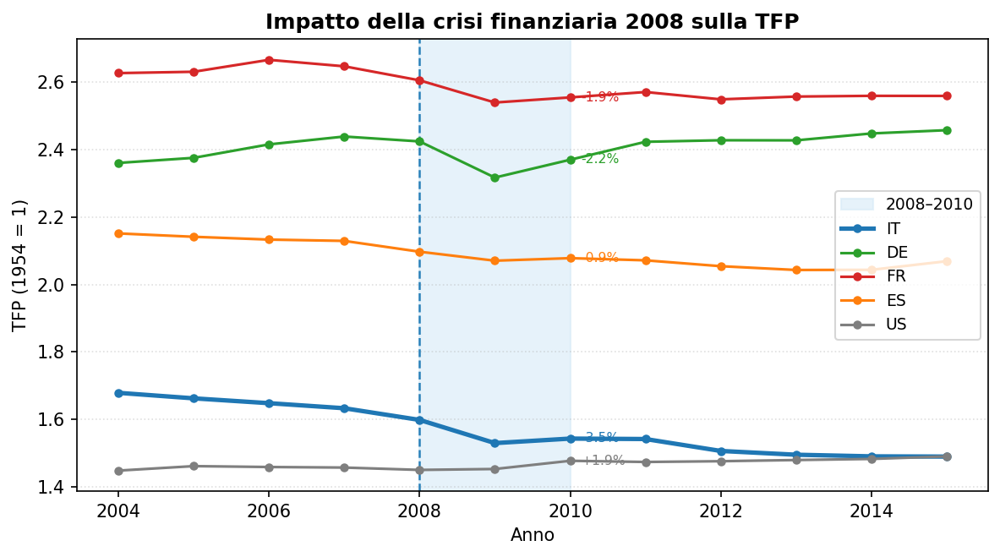

Total Factor Productivity
Analisi comparata IT, DE, FR, ES, US (1954–2023)
Paolo Volterra ![]()
TFP, produttività, catching-up, Italia, Penn World Tables
1 Perché studiare la Total Factor Productivity
Quando si vuole capire perché alcune economie crescono e altre ristagnano, il PIL da solo non basta. Un paese può produrre di più semplicemente accumulando più capitale fisico — costruendo fabbriche, acquistando macchinari — oppure portando più lavoratori nel mercato. Ma questi fattori sono soggetti a rendimenti decrescenti: prima o poi si esauriscono. La domanda davvero interessante è un’altra: quanta crescita otteniamo a parità di input? Quanto riusciamo a fare con le stesse risorse?
Questa quota “residuale” della crescita è la Total Factor Productivity (TFP), detta anche residuo di Solow dal nome dell’economista che la formalizzò negli anni Cinquanta. In senso lato la TFP misura il progresso tecnologico, la qualità delle istituzioni, l’efficienza nell’allocazione delle risorse, la capacità innovativa di un sistema economico. Non è osservabile direttamente: si stima sottraendo al tasso di crescita del PIL il contributo del lavoro e del capitale. Proprio per questo è la variabile più difficile da far crescere con le politiche economiche ordinarie, e la più rivelatrice di quanto un’economia sia davvero moderna.
L’analisi che segue utilizza le serie della Penn World Tables (versione 10.x) distribuite tramite il database FRED della Fed di St. Louis. La serie RTFPNAXXXA632NRUG fornisce la TFP a prezzi nazionali costanti, con base di riferimento 2017, per cinque paesi: Italia, Germania, Francia, Spagna e Stati Uniti. Per rendere confrontabili le traiettorie storiche indipendentemente dai livelli assoluti di partenza, normalizziamo ogni serie a 1,0 nell’anno 1954: in questo modo il grafico mostra di quanto è cambiata la produttività di ciascun paese rispetto a quella base comune. Copertura temporale: 1954–2023 (ultimo dato disponibile).
2 Il quadro generale

TFP normalizzata 1954–2023: cinque paesi a confronto
Il grafico racconta settant’anni di storia economica in una sola immagine. Tre fasi emergono con chiarezza.
Nella prima fase — la fascia verde, 1954–1974 — tutte le economie crescono, ma a velocità molto diverse. Gli USA partono già sulla frontiera tecnologica mondiale: avendo già incorporato le innovazioni del dopoguerra, il loro margine di miglioramento è più stretto, e il CAGR della TFP si ferma allo 0,89 % annuo. Le economie europee invece inseguono: Francia (+3,54 % annuo), Spagna (+3,38 %), Italia (+2,86 %), Germania (+2,75 %) sfruttano il meccanismo del catching-up — importano tecnologie già collaudate dagli USA, riorganizzano la produzione, modernizzano il tessuto industriale. È l’età dell’oro della crescita europea.
La linea tratteggiata rossa del 1974 interrompe bruscamente questa parabola. Con il primo shock petrolifero il costo energetico quadruplica, rendendo obsoleta una parte consistente dello stock di capitale fisico costruito su energia a buon mercato. La seconda fase — la fascia rosa, 1974–1987 — è quella della stagflazione: crescita lenta, inflazione alta, ristrutturazioni dolorose. I paesi reagiscono in modo diverso, e qui le traiettorie cominciano a divergere.
La terza fase, dal 1987 in poi, vede una parziale ripresa in Germania (+1,15 % annuo tra 1987 e 2008) e Spagna, mentre Francia e soprattutto Italia faticano a ritrovare un sentiero stabile. La crisi del 2008 chiude il ciclo con un calo generalizzato, dal quale solo gli USA escono rapidamente.
3 Crescita cumulata e CAGR per sottoperiodo
Le due tabelle seguenti scompongono la storia in quattro archi temporali definiti dagli eventi strutturali: l’età dell’oro (1954–1974), la stagflazione (1974–1987), la lunga ripresa pre-crisi (1987–2008) e il periodo post-crisi finanziaria (2008–2023). La prima tabella mostra la variazione cumulata totale in ciascun periodo; la seconda il tasso di crescita medio annuo composto (CAGR), che normalizza per la durata diversa di ciascun arco e rende i periodi direttamente confrontabili.
| Paese | IT | DE | FR | ES | US |
|---|---|---|---|---|---|
| Periodo | |||||
| 1954–1974 | 75.6% | 71.9% | 100.4% | 94.6% | 19.5% |
| 1974–1987 | -0.2% | 10.8% | 13.9% | 18.0% | 4.5% |
| 1987–2008 | -8.7% | 27.2% | 14.1% | -8.7% | 16.2% |
| 2008–2023 | -9.8% | 3.5% | -6.8% | -2.0% | 7.6% |
Tabella 1: Crescita TFP cumulata (%)
Leggendo la tabella cumulata per colonna si vede subito la differenza tra paesi che hanno saputo ripartire dopo il 1974 e paesi che non ce l’hanno fatta. Francia e Germania accumulano crescita positiva anche nei periodi difficili; l’Italia è l’unica a mostrare segno negativo già dal secondo sottoperiodo e non lo recupera mai.
| Paese | IT | DE | FR | ES | US |
|---|---|---|---|---|---|
| Periodo | |||||
| Età dell'oro (1954–1974) | 2.86% | 2.75% | 3.54% | 3.38% | 0.89% |
| Stagflazione (1974–1987) | -0.02% | 0.80% | 1.01% | 1.28% | 0.34% |
| Ripresa (1987–2008) | -0.43% | 1.15% | 0.63% | -0.43% | 0.72% |
| Crisi e oltre (2008–2023) | -0.69% | 0.23% | -0.47% | -0.13% | 0.49% |
4 Il caso Italia: una frattura che non si è mai chiusa

Sinistra: base 1954 = 1. Destra: re-normalizzata al 1974 per isolare la stagnazione post-shock
Il pannello di destra del grafico è il più eloquente: re-normalizzando tutte le serie al 1974, emerge con nettezza che l’Italia è l’unico paese che non torna mai stabilmente sopra la propria linea di base post-shock. Le altre economie — chi prima, chi dopo — ritrovano un sentiero di crescita della produttività. L’Italia no.
Perché? La letteratura economica suggerisce una combinazione di fattori strutturali che si sono stratificati nel tempo. Primo, il sistema produttivo italiano è dominato da piccole e medie imprese che, pur flessibili, investono poco in ricerca e sviluppo e faticano a scalare. Secondo, la specializzazione nei settori tradizionali (tessile, abbigliamento, meccanica leggera) ha subito la concorrenza dei paesi emergenti proprio negli anni in cui si sarebbero dovuti realizzare gli investimenti in innovazione. Terzo, il mercato dei capitali e del lavoro ha presentato rigidità che hanno rallentato la riallocazione delle risorse verso attività a più alta produttività. Infine, le inefficienze della pubblica amministrazione e il costo della burocrazia hanno compresso i rendimenti privati dell’investimento.
Il risultato numerico è senza appello: nei 49 anni compresi tra il 1974 e il 2023, la TFP italiana è diminuita in media dello 0,40 % ogni anno. La perdita cumulata rispetto al 1974 è del −17,9 %. Nello stesso arco temporale la Germania ha guadagnato il +47 %, la Spagna il +36 %, la Francia il +23 %. Il divario con la frontiera tecnologica, invece di ridursi come ci si attenderebbe da un paese che partiva indietro, si è allargato.
| Valore | |
|---|---|
| TFP Italia 1974 | 1.756000 |
| TFP Italia 2023 | 1.442000 |
| Variazione cumulata | -17.9% |
| CAGR 1974–2023 | -0.402% |
Tabella 2: Italia: indicatori chiave post-1974
5 La crisi del 2008: l’ultimo shock generalizzato

Impatto della crisi finanziaria 2008 sulla TFP
La crisi finanziaria globale del 2008–2009 è l’ultimo grande evento esogeno che colpisce la produttività in modo sincronizzato. Il canale di trasmissione è diverso da quello del 1974: non è un rincaro dell’energia a rendere obsoleto il capitale, ma il credit crunch — il brusco razionamento del credito bancario — che blocca gli investimenti, comprime la domanda e accelera la distruzione di imprese. Le imprese più vulnerabili, quelle con meno liquidità e più esposte ai mercati finanziari, escono dal mercato o ridimensionano drasticamente; la produttività media dell’economia cade perché sopravvivono soprattutto le imprese che erano già meno dinamiche.
Il grafico mostra la finestra 2004–2015 per mettere in evidenza l’ampiezza e la velocità del crollo. La tabella quantifica la variazione della TFP nel biennio più acuto (2008–2010):
| Var. TFP 2008→2010 | |
|---|---|
| Paese | |
| IT | -3.5% |
| DE | -2.2% |
| FR | -1.9% |
| ES | -0.9% |
| US | +1.9% |
Tabella 3: Variazione TFP 2008–2010
Tutti i paesi europei registrano cali: da −0,9 % della Spagna a −3,5 % dell’Italia. Solo gli Stati Uniti invertono la tendenza già entro il 2010 (+1,9 %), grazie alla rapidità della risposta di politica monetaria, alla flessibilità del mercato del lavoro e alla maggiore capacità delle imprese americane di riallocare risorse verso settori ad alta produttività come il digitale.
Per l’Italia il 2008 rappresenta il colpo di grazia a una produttività che era già ferma da tre decenni. Non si tratta soltanto di un rimbalzo ciclico negativo: i dati mostrano che dopo il 2010 la TFP italiana non recupera i livelli pre-crisi, consolidando una traiettoria di declino strutturale che affonda le radici nel 1974.
6 Conclusioni
L’analisi conferma e quantifica quattro affermazioni che sintetizzano settant’anni di divergenza nella produttività europea.
1. Il catching-up è reale, ma dipende dalla distanza dalla frontiera. Nell’età dell’oro gli USA crescono lentamente (0,89 % annuo) perché non hanno nessuno da imitare: devono innovare ex novo. Le economie europee, ancora lontane dalla frontiera, importano tecnologie già testate, riorganizzano la produzione su modelli americani e crescono a ritmi quasi quattro volte superiori. Questo meccanismo — il catching-up di Gerschenkron — spiega perché i paesi arretrati possano convergere rapidamente, ma anche perché la convergenza rallenta una volta che il divario si riduce.
2. Il 1974 è uno spartiacque, non un rallentamento. Il primo shock petrolifero non è un ciclo negativo passeggero: provoca una caduta strutturale della crescita della produttività in tutti i paesi. La differenza tra chi riesce a ripartire e chi no dipende dalla capacità di riallocare il capitale verso tecnologie non energivore, di ristrutturare il tessuto industriale e di mantenere investimenti in istruzione e ricerca anche nei periodi di austerità fiscale.
3. L’Italia è un caso a sé. È l’unico paese con CAGR della TFP negativo su tutti i sottoperiodi successivi al 1974. La TFP italiana nel 2023 è inferiore del 17,9 % rispetto al 1974: mezzo secolo perduto sul fronte dell’efficienza produttiva. Questo non significa che l’economia italiana non abbia prodotto ricchezza nel periodo, ma che l’ha fatto principalmente accumulando input — più capitale, più ore lavorate — e non migliorando l’efficienza con cui li utilizza. Un sentiero insostenibile nel lungo periodo.
4. Il 2008 amplifica i divari preesistenti. La crisi finanziaria colpisce tutti, ma non allo stesso modo. I paesi che erano riusciti a costruire una base produttiva solida nel trentennio precedente (Germania in testa) assorbono lo shock e riprendono. I paesi che arrivavano al 2008 già indeboliti — Italia in primo luogo — escono dalla crisi con una produttività ancora più lontana dalla frontiera. La politica economica post-2008 si è concentrata soprattutto sul consolidamento fiscale e sulla tenuta del sistema bancario; le riforme strutturali necessarie a riaccendere la crescita della TFP sono rimaste in larga parte incompiute.
7 Implicazioni: produttività, credito e la prossima frontiera
7.1 La tesi in sintesi
L’Italia non è un paese che cresce poco: è un paese che da cinquant’anni fatica a trasformare le risorse in produttività. Il meccanismo di diffusione tecnologica che aveva alimentato il miracolo economico si è inceppato nel 1974 e non è mai stato riparato. Il risultato è che ogni shock esogeno — energetico nel 1974, finanziario nel 2008 — trova il sistema produttivo italiano già in posizione difensiva e produce effetti asimmetrici rispetto agli altri paesi europei.
Questa distinzione non è accademica. Ha conseguenze dirette sul profilo di rischio delle imprese, sull’allocazione del credito e sulla valutazione della capacità di rimborso a medio termine.
7.2 TFP e rischio di credito
Il divario di produttività si traduce in modo meccanico sulla redditività delle imprese. Un’impresa operante in un settore a TFP stagnante o decrescente deve compensare la perdita di efficienza con aumenti di prezzo — difficili in mercati aperti alla concorrenza internazionale — oppure comprimendo margini e investimenti. Nel lungo periodo, bassa TFP significa:
- Minori flussi di cassa liberi disponibili per il servizio del debito, a parità di fatturato;
- Maggiore esposizione agli shock di costo (energia, materie prime, salari) perché l’inefficienza produttiva riduce i cuscinetti di margine;
- Difficoltà strutturali a crescere che rendono il debito bancario una soluzione di liquidità, non di investimento.
La Germania ha accumulato +47 % di TFP tra il 1974 e il 2023; l’Italia ha perso il 17,9 %. Il differenziale — 64 punti percentuali in mezzo secolo — non è riassorbibile con cicli congiunturali favorevoli. Si tratta di uno scarto strutturale che un’analisi del merito creditizio corretta dovrebbe scontare nella valutazione delle PMI manifatturiere italiane, specialmente quelle operanti nei settori a più bassa intensità tecnologica.
7.3 Il prossimo shock: intelligenza artificiale e digitale
Lo shock energetico del 1974 ha reso obsoleta una parte del capitale fisico costruito su energia a buon mercato. Lo shock AI degli anni 2020 rischia di rendere obsoleta una parte del capitale umano e organizzativo costruito su lavoro manuale a medio contenuto cognitivo — esattamente la specializzazione produttiva dove l’Italia è sovrarappresentata.
I paesi che hanno mantenuto — o ricostruito — un meccanismo efficiente di diffusione tecnologica (Stati Uniti, Germania, in misura minore Francia) assorbono questo shock trasformandolo in guadagni di produttività. I paesi che arrivano al 2025 con una TFP già in declino rischiano invece di subire un effetto sostituzione senza contropartita: le attività a basso valore aggiunto vengono automatizzate, ma la capacità di generarne di nuove ad alto valore rimane compressa dalle stesse rigidità strutturali che hanno bloccato la crescita della TFP nei decenni precedenti.
Il monitoraggio della TFP settoriale — già disponibile attraverso le serie Penn World Tables e i dati ISTAT sulla competitività — diventa quindi uno strumento di early warning per identificare le filiere dove il rischio di obsolescenza sistemica è più elevato, e dove la qualità del portafoglio crediti delle banche esposte a quelle filiere richiede un’attenzione aggiuntiva.